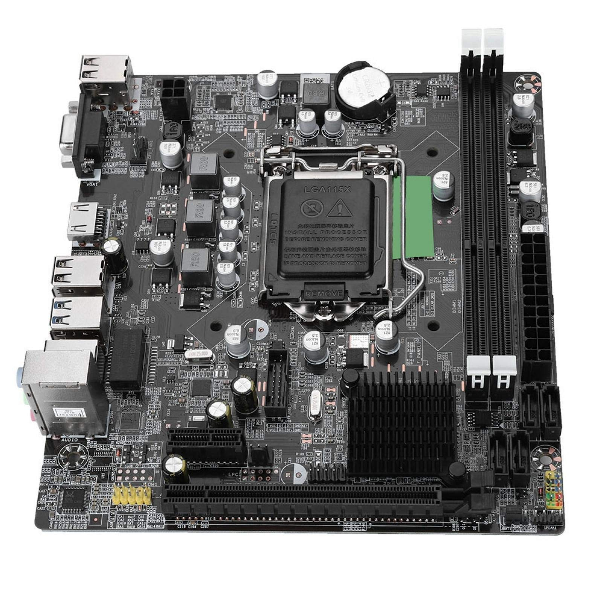

Motherboards
A motherboard, also known as a mainboard or system board, is the central hub of a computer system. It connects all of the components together, including the CPU, RAM, storage devices, and other peripherals.

Types of Motherboards
There are several types of motherboards, each designed for a specific type of computer:
- StroATX: The most common type of motherboard, used in desktop computers.
- MicroATX: A smaller version of the ATX motherboard, often used in smaller desktops and home theater PCs.
- Mini-ITX: An even smaller motherboard, used in small form factor desktops and embedded systems.
- Server motherboards: Designed for use in servers and other enterprise-level systems, with additional features such as multiple CPU sockets and support for ECC memory.
Motherboard Components
A motherboard is made up of several components, including:
- CPU socket: The slot where the processor is installed.
- RAM slots: The slots where memory modules are installed.
- Expansion slots: Slots for expansion cards such as graphics cards, sound cards, and network adapters.
- Storage connectors: Connectors for storage devices such as hard drives and solid state drives.
- Power connectors: Connectors for the power supply unit (PSU) to provide power to the motherboard and other components.
Motherboard Specifications
When choosing a motherboard, there are several specifications to consider:
- Form factor: The size and shape of the motherboard, which determines what type of computer case it can be installed in.
- CPU socket type: The type of CPU socket on the motherboard, which determines what type of processor can be installed.
- RAM support: The maximum amount and type of memory that the motherboard can support.
- Expansion slot support: The number and type of expansion slots that the motherboard has.
- Storage support: The number and type of storage connectors that the motherboard has.
Overall, choosing the right motherboard depends on your specific needs and budget. By understanding the different types of motherboards, components, and specifications, you can make an informed decision that meets your computing needs.